와이어프레임
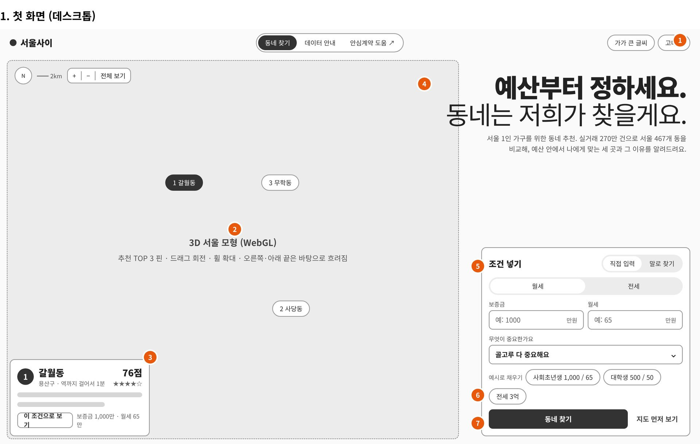
1. 첫 화면
① 화면 설정: 큰 글씨·고대비. 어느 화면에서나 켜고 끌 수 있고 다음 방문에도 유지
② 3D 서울 모형(WebGL): 추천 TOP 3 핀, 드래그 회전·휠 확대, 약 2.8km 높이에서 내려다보며 시작
③ 예시 결과 카드: 보증금 1,000만·월세 65만 원으로 미리 계산한 1위, ‘이 조건으로 보기’로 바로 결과
④ 헤드라인과 한 줄 소개: 무엇을 하는 서비스인지 한 번에
⑤ 조건 넣기 카드: ‘직접 입력 / 말로 찾기’ 탭, 월세·전세, 보증금·월세(만 원), 상황 선택
⑥ 예시로 채우기 칩: 사회초년생 1,000/65 · 대학생 500/50 · 전세 3억
⑦ 주 버튼 ‘동네 찾기’, 보조 ‘지도 먼저 보기’
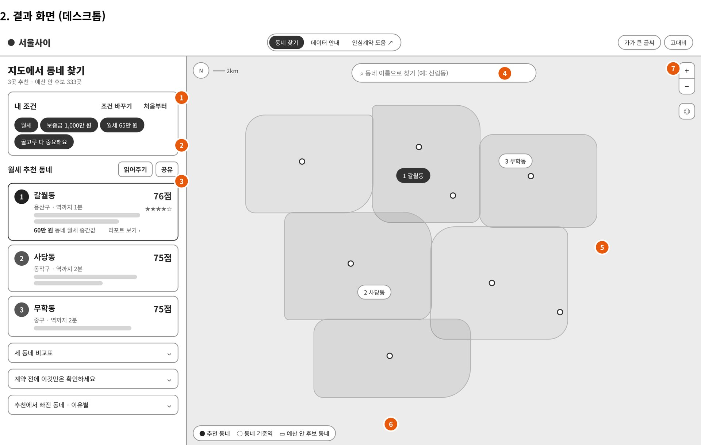
2. 결과 화면
① 내 조건 요약 칩과 ‘조건 바꾸기 / 처음부터’. 펼치면 상황·항목별 중요도·학교·직장 반경 설정
② 읽어주기(TOP 3 음성)·공유(같은 조건 링크)
③ 추천 카드 3장: 순위, 동네 이름, 구·역까지 도보 시간, 한 줄 이유, 월세 중간값, 점수와 별점
④ 동네 이름 검색
⑤ 동네 경계를 눌러 선택, 흰 점은 동네별 기준역. 예산 안 후보 동네는 옅게 칠함
⑥ 범례: 추천 동네 · 동네 기준역 · 예산 안 후보 동네
⑦ 휠 확대·축소, +/− 버튼, 서울 전체 보기
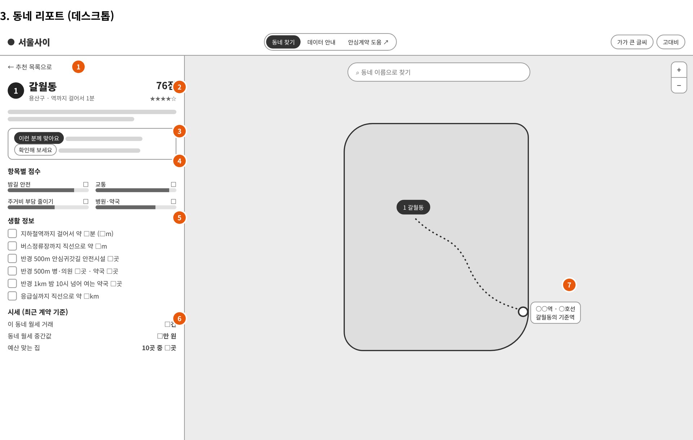
3. 동네 리포트
① 목록으로 돌아가기
② 동네 이름 → 구·역까지 도보 시간, 종합 점수
③ 이런 분께 맞아요 / 확인해 보세요
④ 항목별 점수 막대 4개(밤길 안전·교통·주거비·병원·약국)
⑤ 생활 정보: 역 도보 거리, 버스정류장, 안심시설·병원·약국 수, 밤늦게 여는 약국, 응급실
⑥ 시세: 동네 월세 중간값, 예산 맞는 계약 비율
⑦ 지도: 동네 경계 강조, 출입구까지 실제 도보 경로, 기준역 점
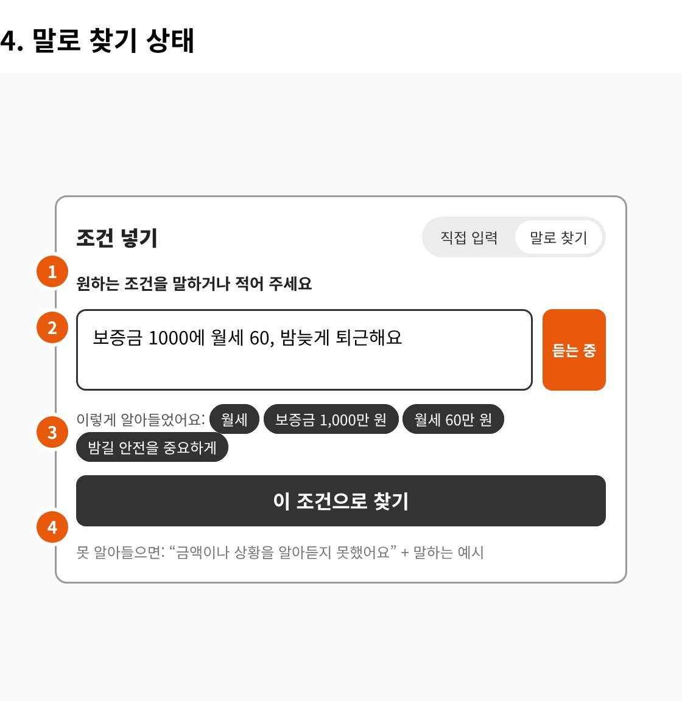
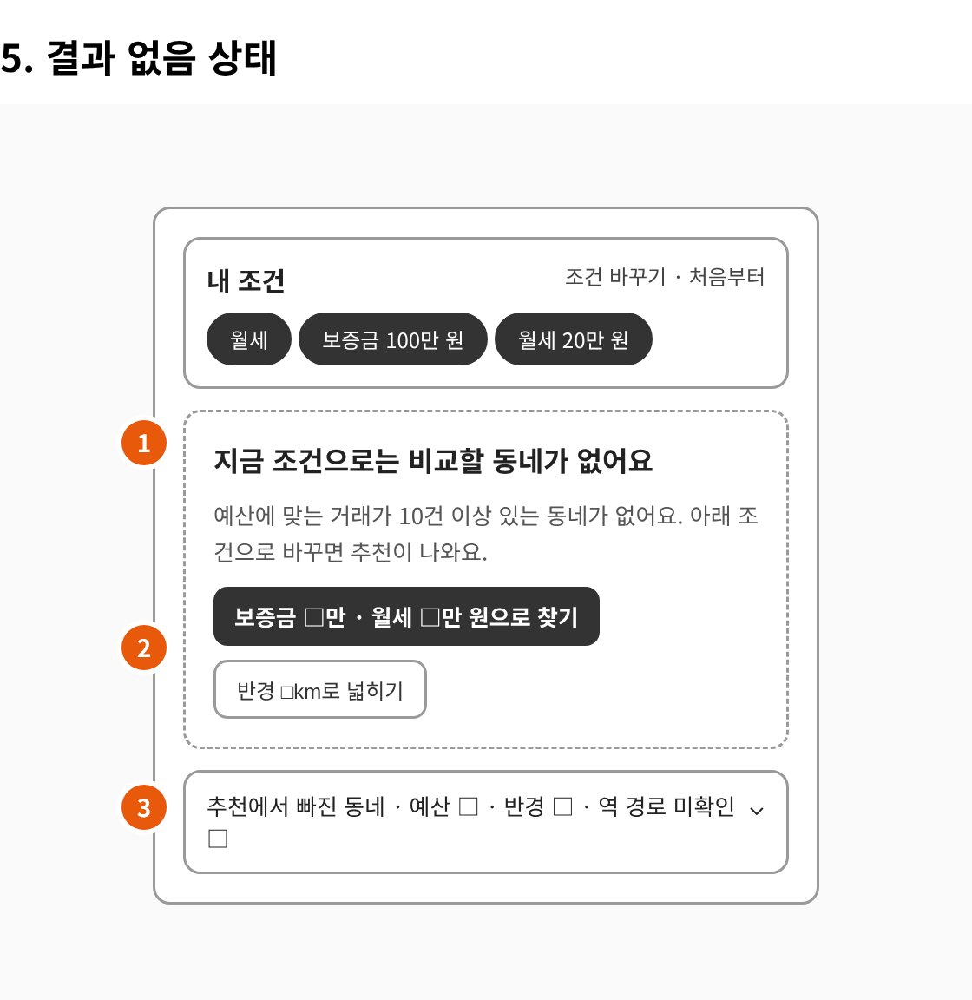
4. 말로 찾기
① ‘말로 찾기’ 탭
② 말하거나 적는 칸과 마이크(듣는 중에는 강조)
③ 알아들은 조건을 칩으로 먼저 보여 줌 — 확인 전에는 적용하지 않음
④ ‘이 조건으로 찾기’. 빠진 값은 결과 화면 입력칸에서 오류로 안내
5. 결과 없음
① 지금 조건 요약
② 왜 없는지 한 문장 + 추천이 나오는 예산·반경을 버튼으로 제안
③ 빠진 동네를 이유별 개수로 묶어 펼쳐 보기
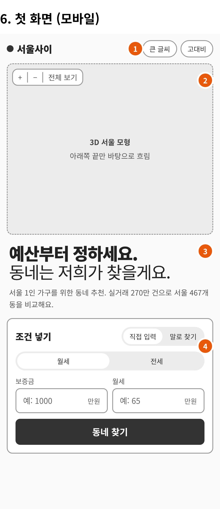
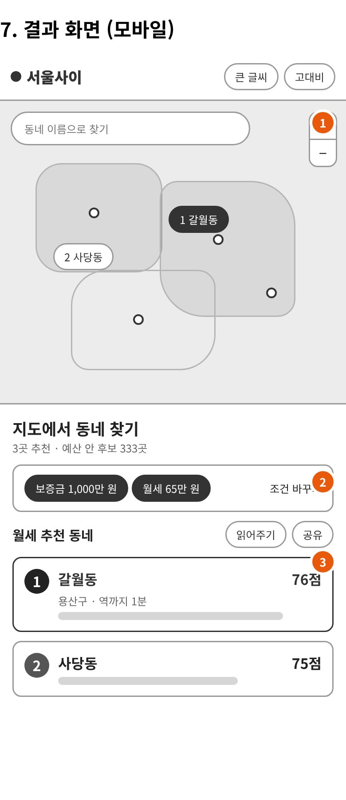
6·7. 모바일 (900px 이하)
① 메뉴는 숨기고 큰 글씨·고대비만 남김, 머리글은 위에 고정
② 3D 모형·지도는 화면 위쪽(높이 약 40%), 내용은 아래로 이어짐
③ 조건 카드·추천 목록은 한 줄로 쌓임, 버튼은 손가락 크기(44px 이상)
④ 주 버튼은 카드 폭 전체
레이아웃
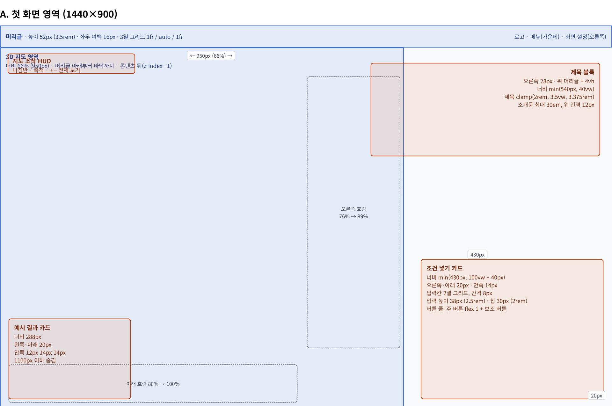
A. 첫 화면은 스크롤 없는 한 장(높이 100svh)
· 파랑 = 고정 영역, 주황 = 지도 위에 뜨는 카드
· 3D 지도: 왼쪽 0, 너비 66%, 머리글 아래부터 바닥까지. 오른쪽 76%~99%, 아래 88%~100% 구간을 바탕색으로 흐림
· 제목 블록: 오른쪽 28px, 위 머리글+4vh, 너비 min(540px, 40vw), 오른쪽 정렬
· 예시 결과 카드 288px(왼쪽 아래 20px), 조건 넣기 카드 min(430px, 100vw−40px)(오른쪽 아래 20px)
· 1100px 이하: 예시 결과 카드 숨김, 지도 너비 60%
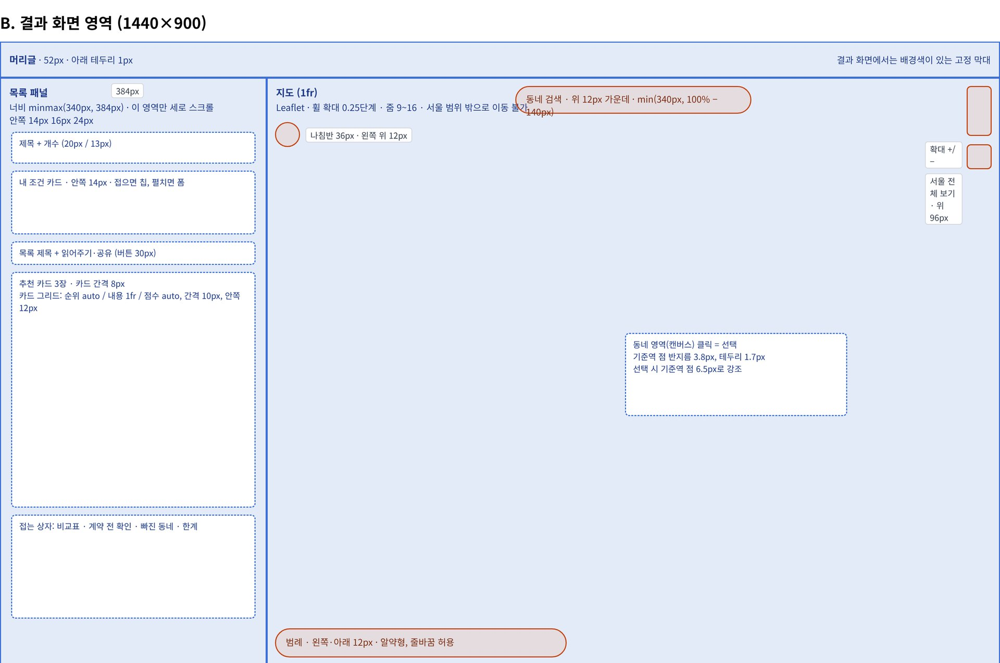
B. 결과 화면도 한 장(100svh): 왼쪽 목록만 스크롤, 문서 전체는 스크롤되지 않음
· 그리드: 왼쪽 패널 minmax(340px, 384px) + 지도 1fr
· 패널 안쪽 여백 14px 16px 24px, 카드 사이 8~12px
· 지도 위 요소: 동네 검색(위 가운데), 나침반·축척(왼쪽 위), 확대 +/−·전체 보기(오른쪽 위), 범례(왼쪽 아래)
· 지도 층(아래→위): 타일 → 도보 경로·선택 경계 → 동네 영역(캔버스) → 서울 밖 가림 → 구 이름 → 기준역 점 → 추천 핀
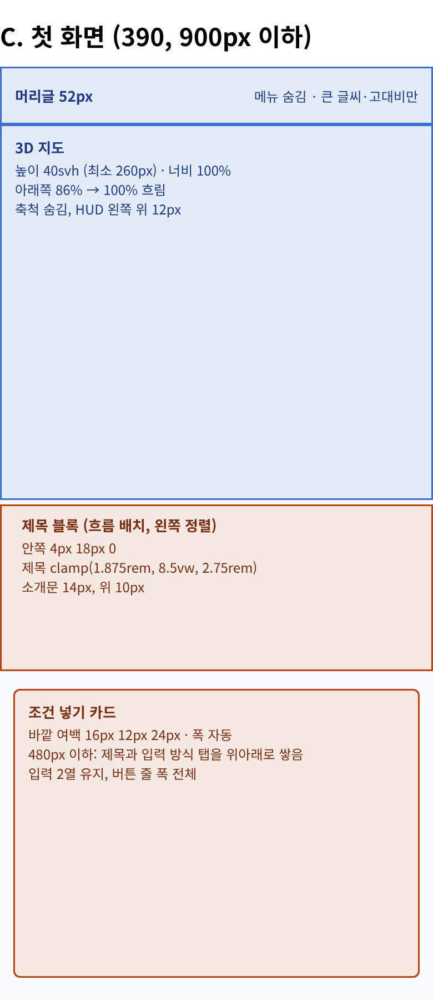
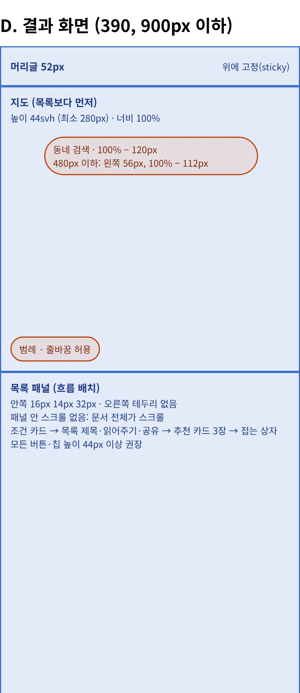
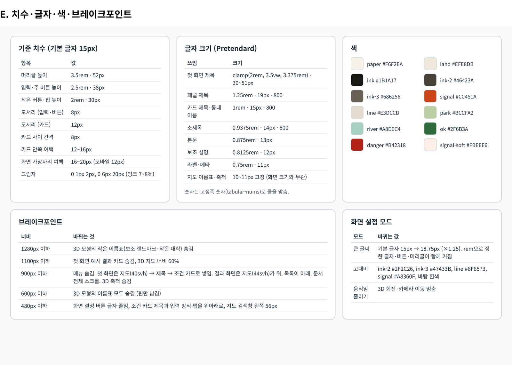